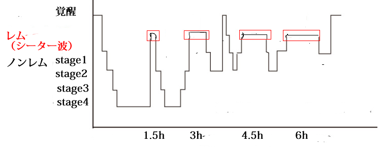

ＯＢＥ
ＯＢＥの歴史 william buhlmanの理論 脳波 至高体験 モンロー研 Robert Bruceの理論 Oliver Foxの理論 Stephen LaBergeの理論| ＯＢＥの歴史 | ||||
| ２０世紀初頭 | ||||
| エドガー・ケーシー | 霊媒。霊言により予言する。 | |||
| 幽体離脱（ＯＢＥ）のさきがけとなる３人。それぞれ自分の体験を分析して、その技術を本に著した。 | ||||
| ウラム | フランス人。「Practical Astral Travel」 | |||
| シルヴァン・マルドゥーン（S. Muldoon ） | アメリカ人。 「The Projection of the Astral Body」など多数 | |||
| オリバー・フォックス（ Oliver Fox ） | イギリス人。「Astral Projection」 | |||
| ２０世紀後半～現代 | ||||
| クルッコール博士（Robert Crookall） | 科学者クルッコール博士は700以上のOBE報告を分析した。 | |||
| アレックス・タナウス（Alex Tanous） | 幽体離脱をして過去や未来に行くことができた。 | |||
| ロバート・モンロー（Robert A. Monroe） | 幽体離脱経験を３冊の本にまとめ、モンロー研究所を設立した。 | |||
| ウィリアム・ブールマン （William Buhlman) | 自分の体験と理論を「Adventures Beyond the Body」にまとめ、現在も体外離脱のワークショップを行っている。 | |||
| ブルース・モーエン(bruce moen) | モンロー研のセッションを何度も経験して、その体験を４冊の本に著す。 | |||
| ロバート・ブルース（Robert Bruce) | ベストセラー「Astral Dynamics」を著す。 | |||
| スティーヴン・ラバージ（Stephen LaBerge) | スタンフォード大学で明晰夢研究に携わる。自ら明晰夢を数多く体験する。 | |||
| ＲＶ（リモートヴューイング） | ||||
| インゴ・スワン（Ingo Swann） | スタンフォード研究所（SRI）で被験者としてＲＶに従事する。 | |||
| ジョー・マクモニーグル（Joseph McMoneagle ） | ＲＶで有名だが幽体離脱も経験し、モンロー研究所とも関わりがある。 | |||
|
|
||||||
| ウィリアム・ブールマン （William Buhlman) の理論 | ||||||
| 眠りに落ちる前にできるだけ長く意識を保持して、離脱するためのテクニック | ||||||
| アファメーション | 眠る前に、これから離脱する旨のアファーメーションを唱え続ける。意識が眠りに近づけば近づくほど、強くアファーメーションを唱えるようにする。 | |||||
| イマジネーション | 眠りに落ちる前に、自分から離れている部屋の中の物や人や場所を想像する。そして、想像力を使って、詳しく見たり触れたりしてみる。 | |||||
| 夢の会話 | 眠る前に、夢の中で夢と気づく旨のアファーメーションを唱え続ける。意識が眠りに近づけば近づくほど、強くアファーメーションを唱えるようにする。 | |||||
| 振動 | 振動は離脱の兆候なので、体の中に振動を探り、振動を感じたら、意識的に体中に拡げるようにする。肉体に最も近い精妙な身体であるエーテル体はチャクラと呼ばれる７つのエネルギー中枢をもっていて、チャクラは、高次のエネルギーを、現実の世界に流す働きがある。チャクラが刺激され開くと、高次のエネルギーが流れ、その結果として、振動として感じられる。 | |||||
| 離脱後のテクニック | ||||||
| Clarity | 離脱後に、意識が薄れてきたら「Clarity（意識がはっきりするように）」と,意識がはっきりするまで繰り返し心の中で強く要求する。そうすることによって、長時間離脱することも可能となる。 |
|||||
raise our vibratory rate experience my higher self move inward
|
離脱後に、「raise our vibratory rate（振動のレベルを上げて、第２の身体に移行する)」、「experience my higher self（高次の自我を体験する）」もしくは、「move inward（内へ移動する)」と要求することにより、より精妙な体に変えることができる。それはよく内にひっぱられる感覚として体験される。体の振動と周りの世界は連動していて、体の振動が変われば周りの世界も変わる。 | |||||
| 離脱後の身体とそれに対応する世界 | ||||||
| 第１の身体 | 意識は肉体の意識に似ている。 | consensus world | 現実世界と同じに見えるが、そのものではない。意識でなかなか環境に変化を起こせない。 | |
| 第２の身体 | 意識はよりはっきりして、内のエネルギーの感覚が高まる。ビジョンや光を伴った経験も増える。 | non consensus world | 公園や森などの風景。この世とは違う別世界。意識で環境に変化を及ぼすことができる。 | |
| higherｰself (soul) | 時間と空間と形の概念を超えている。より濃密な世界に対する知覚と影響力が拡大する。 | natural energy environment | 形のない世界。エネルギや光として体験される。全体との一体感を感じる。 |
|
|
||||||||
| 脳波 | 意識は連続体であり、焦点が変われば知覚される世界も変わる。瞑想で内面に集中することにより、ミッドアルファ波、さらに集中して無我の状態になり、シーター波の状態になることが可能である。 |
| β（ベータ波 １４～２６ＨＺ） | 周りの世界にとらわれている状態。いらいらした状態。 |
| α（アルファ波） | 内面に集中した状態。α３、α２、α３に分類される。 |
| α３（ファーストアルファー波 １２～１４ＨＺ） | 緊張した集中状態。 |
| α２（ミッドアルファー波 ９～１２ＨＺ） | リラックスしながら集中している状態。勉強やスポーツなどで能力が発揮できる状態。 |
| α１（スローアルファー波 ８～９ＨＺ） | ぼんやりしたまどろみの状態。 |
| θ（シータ波 4～7 Hz ） | 浅い睡眠状態の時に現れる脳波。またθ波には、瞑想などのかなり集中したときに発生する「 覚醒θ波」と呼ばれる波長もある。通常は長く維持するのは難しい。幽体離脱が可能な状態。 |
| δ（デルタ波 0.5～3 Hz ） | 眠っている状態。 |
睡眠と脳波の関係  入眠から90分のサイクルで夢を見るレム睡眠が現れる。これを利用して、１度寝て目覚めた時（２度寝時）に瞑想を行うことで、幽体離脱はやりやすくなる。 |
| 至高体験 | |
| ブルース・モーエンの体験 | ブルースモーエンは、車を運転しながら離脱するほどの能力を持っているが、その発端となったのが至高体験である。 モンロー研でのセッション中に、高振動の波が、体の底から頭頂まで上がるのを感じ,強烈な喜びがかけめぐり、何百もの”we love you”というコーラスを聞く。 この体験の後、モーエンは眉間の振動と言葉を結合させることにより、トータルセルフと会話できるようになった。 さらに、離脱中に、円盤もしくは擬人化した男のイメージを意図することによって、高振動の振動を感じ、トータルセルフとしばしばコミュニケーションできるようになった。 |
| マクモニーグルの体験 | マクモニーグルは、リモートビューイングをするようになる前に、臨死体験で至高体験を経験している。 毒を飲まされた後に、自分自身が倒れてから、病院に運ばれるまでの一部始終を幽体の状態で目撃する。 自分自身が手術を受けているのを見ている時に、首の後ろに暖かさを感じ、それが第２の体中に拡がるのを感じる。その時にものすごいエクスタシーや力の感覚とともに、光と一体感を感じる。そして光の中で ”肉体に戻りなさい”という声を聞き、意識を回復する。 この体験の後マクモニーグルは、他人が話している時にその考えがわかるようになった。また幽体離脱も経験するようになった。 |
| ロバート・ブルース（Robert Bruce)の理論 | |
| Mind Split理論 | 肉体は眠り、意識は目覚めた状態（トランス状態）になると、意識はエーテル体に移行する。エーテル体はエネルギーの源であり、生きている間は、完全に肉体から離れることはないとされている。そこで、エーテル体は幽体を生成する。離脱前の振動は、そのエネルギー活動の現れである。幽体が生成されると、意識は幽体にコピーされ、幽体離脱が起きる。離脱している間も、幽体はエネルギーをエーテル体から受け続ける。離脱中に意識は抜け出して肉体は空になるという従来の考え方ではなくて、意識がコピーされるという考え方である。 |